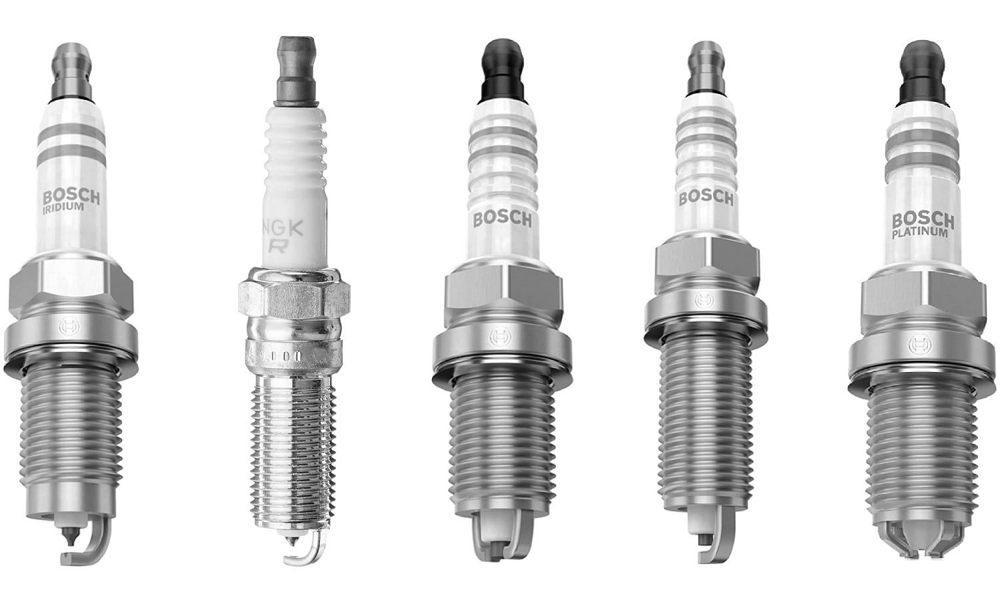
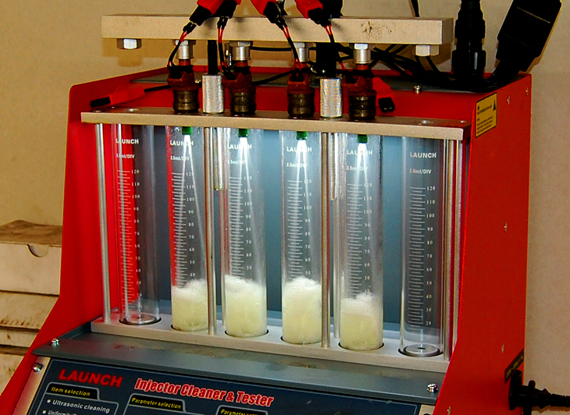
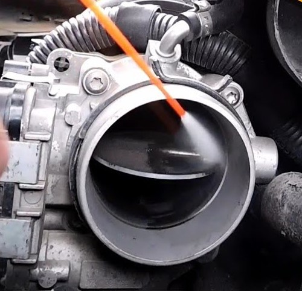
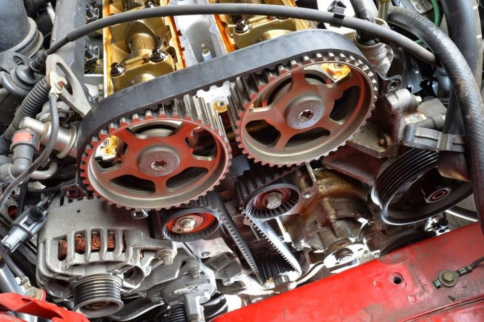
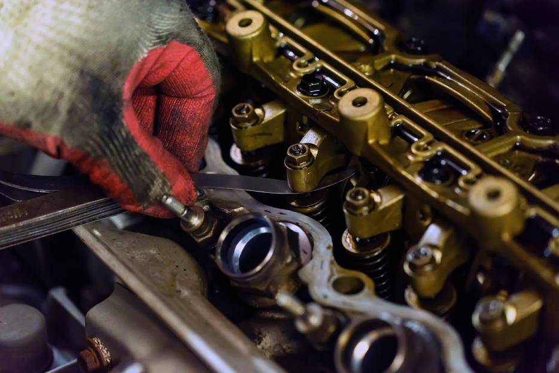

La sincronizacion o puesta a punto de nuestros motores es necesaria cada cierto kilometraje, enfoca varios factores a revisar. Una falta de sincronizacion nos puede ocacionar mayor consumo de combustible, perdida de potencia, problemas de encendido, marcha inestable de nuestro motor y hasta daños mayores en el mismo
Las bujias estan encargadas de encender la mezcla aire combustible que entra a nuestro motor, ademas de mantener limpia nuestra camara de combustion. Deben ser reemplazadas segun el kilometraje especificado por el fabricante y con las especificaciones correctas o en caso de detectarse daños en las mismas


Los inyectores estan a cargo de insertar el combustible pulverizado bien sea de forma directa o indirecta en nuestro motor, una falla de inyeccion puede suministrar la cantidad inadecuada de combustible ocacionando perdidas de potencia, consumo excesivo de combustible entre otros muchos daños
El cuerpo de aceleracion regula la cantidad de aire que ingresa al motor segun las revoluciones a las que llevemos nuestro motor, la suciedad acumulada en el mismo puede obstaculizar el flujo de aire teniendo perdidad de pontencia y marcha inestable


Distintos sensores estan expuestos a la suciedad, por ende pueden ocacionar fallas en nuestro motor, como el sensor map, maf, de oxigeno, de temperatura de aire, entre otros
El conjunto de distribucion es el encargado de la apertura de las valvulas en el momento adecuado para la entrada de mezcla al motor y desocupe de gases. La distribucion debe ser reemplada sin falta segun el kilometraje que indica el fabricante o al detectarse daño, ya que un fallo en el mismo pueded ocacionar graves daños y repaciones costosas en nuestro motor. Tambien se deben revisar las correas o correa unica de accesorios segun el modelo de nuestro auto, esta se encarga de suministrar rotacion a elementos como el alternador, bomba de agua, bomba de direccion y otros. Segun el modelo tambien sera necesaria la calibracion de la aperturas de valvulas segun indique el fabricante

